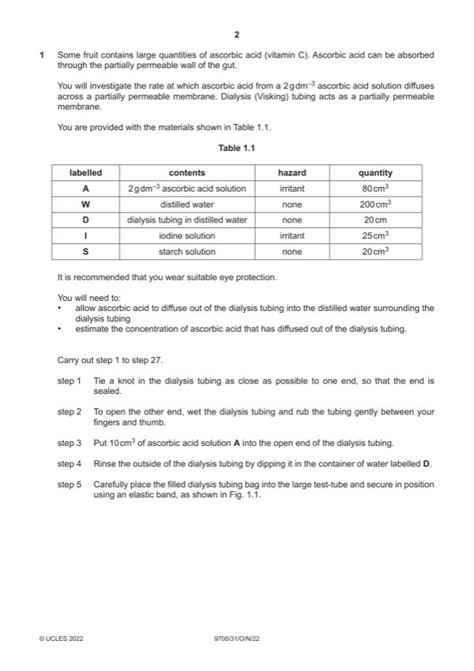

Question 1

Original paper page 2
Part 1(a)(i) — solution
1 volume of water stated between 15 and 30 cm3 ; 1
Mark points
- Include the ideas shown in the solution above.
Part 1(a)(ii) — solution
1 shows three other concentrations of ascorbic acid and in descending order ; 2
Mark points
- Include the ideas shown in the solution above.
Part 1(a)(iii) — solution
1 heading for independent variable: concentration of ascorbic acid and g dm–3 ; 5
Mark points
- Include the ideas shown in the solution above.
Part 1(a)(iv) — solution
1 volume of iodine added and cm3 ; 1
Mark points
- Include the ideas shown in the solution above.
Part 1(a)(v) — solution
1 correct estimation of concentration of ascorbic acid ; 1
Mark points
- Include the ideas shown in the solution above.
Part 1(a)(vi) — solution
1 shows division by, time / 15 (minutes) ; 2
Mark points
- Include the ideas shown in the solution above.
Part 1(a)(vii) — solution
any two from: 2
Mark points
- Include the ideas shown in the solution above.
Part 1(a)(viii) — solution
any two from: 2
Mark points
- Include the ideas shown in the solution above.
Part 1(b)(i) — solution
1 x-axis: time / hours 4
and
y-axis: water content / g of water for each g of melon ;
Mark points
- Include the ideas shown in the solution above.
Part 1(b)(ii) — solution
1 no net movement of water in or out of fruit ; 2
Mark points
- Include the ideas shown in the solution above.